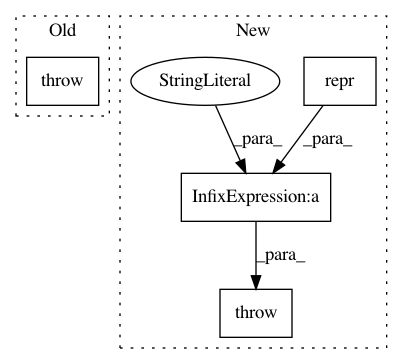

8852b00554e0e925bb39618f30bd5afdbd9c5174,bipy/core/tree.py,TreeNode,root_at,#TreeNode#Any#,187
Before Change
return frozenset(sets)
def root_at(self, node):
raise NotImplementedError()
////// end copy like methods //////
////// node checks //////
After Change
node = self.find(node)
if not node.Children:
raise TreeError("Can"t use a tip (%s) as the root" %
repr(node.Name))
return node.unrooted_deepcopy()
def root_at_midpoint(self):
Return a new tree rooted at midpoint of the two tips farthest apart
In pattern: SUPERPATTERN
Frequency: 4
Non-data size: 4
Instances
Project Name: biocore/scikit-bio
Commit Name: 8852b00554e0e925bb39618f30bd5afdbd9c5174
Time: 2014-03-14
Author: mcdonadt@colorado.edu
File Name: bipy/core/tree.py
Class Name: TreeNode
Method Name: root_at
Project Name: etal/cnvkit
Commit Name: 25016b4ef075defc711f6e18ab73013d4fa29e66
Time: 2015-06-13
Author: eric.talevich@gmail.com
File Name: cnvlib/gary.py
Class Name: GenomicArray
Method Name: __init__
Project Name: nilearn/nilearn
Commit Name: e78e3ec7eb07954969629cc77594e6cd189c1224
Time: 2014-02-03
Author: gael.varoquaux@normalesup.org
File Name: nilearn/_utils/niimg_conversions.py
Class Name:
Method Name: check_niimg
Project Name: probcomp/bayeslite
Commit Name: 047c1206650c6524075e6509809f9810f91548d4
Time: 2015-08-25
Author: riastradh+probcomp@csail.mit.edu
File Name: src/read_csv.py
Class Name:
Method Name: bayesdb_read_csv